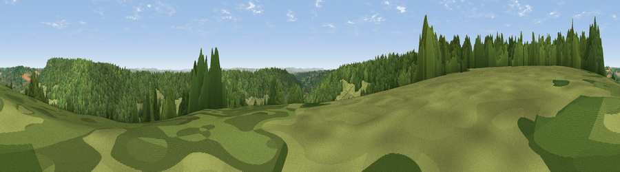

Viewpoint near Monkton Combe
#24645 in England · top 42% of its area beats it · near Monkton CombeThe view, rendered

A 360° render of this exact spot computed from the terrain model, tree cover and land cover — summer colours, afternoon light, calibrated against photographs of famous viewpoints. Real trees, hedges and buildings will differ in detail.
The panorama
Grey silhouette: terrain skyline in each direction (720 bearings, Earth curvature and refraction included). Dashed green: skyline with trees (+15 m) and buildings (+8 m) as obstacles. Blue strip: how far the ground is visible on each bearing.
Where the view opens
Wedge length = distance to the farthest visible ground on that bearing (vegetation-aware). Rings at 10, 25 and 50 km.
What fills the view
61% woodland · 36% grassland · 2% cropland ·
Angular shares of the visible panorama (visual magnitude), not map area. Landscape diversity 0.34 (0–1 Shannon).
Key numbers
More beautiful places nearby
The staircase of upgrades: each row has a higher view potential than everything closer. Driving times are estimates from straight-line distance, calibrated against real road routing — check an actual route before setting out.
| Place | Direction | Drive | Score |
|---|---|---|---|
| Viewpoint near Bathampton | NNW · 1 km | ~4 min | 58.2 |
| Viewpoint near Bathford | NNE · 2 km | ~6 min | 64.0 |
| Viewpoint near Combe Hay | WSW · 7 km | ~14 min | 66.1 |
| Viewpoint near Kelston | WNW · 8 km | ~16 min | 74.2 |
| Viewpoint near North Stoke | WNW · 9 km | ~18 min | 75.4 |
| Hanging Hill | NW · 9 km | ~18 min | 76.4 |
| Cley Hill | SSE · 20 km | ~34 min | 76.8 |
| Viewpoint near Lamyatt | SSW · 30 km | ~48 min | 77.8 |
51.37531, -2.31279 · source: screening · position refined by local search. Computed location — check access rights before visiting.